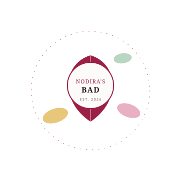

Nodira's BAD — ishonch bilan qurilgan brend
Har bir oilaning kundalik salomatligiga g'amxo'rlik qilish g'oyasidan tug'ilgan brend.
Sifatli BAD mahsulotlarini har bir uyga yetkazish
Nodira's BAD — vitaminlar, minerallar va tabiiy qo'shimchalar orqali odamlarning kundalik farovonligini qo'llab-quvvatlash maqsadida tashkil etilgan. Biz har bir mahsulotni tanlashda tarkib tozaligi, samaradorlik va xavfsizlikni birinchi o'ringa qo'yamiz.
Har bir partiya laboratoriya nazoratidan o'tadi, formulalar esa zamonaviy tadqiqotlarga asoslanadi. Maqsadimiz — mijozlarimiz o'z sog'lig'i haqida qaror qabul qilishda ishonchli hamroh bo'lish.

Har bir mahsulotda aks etadigan printsiplar
Shaffoflik
Har bir mahsulot tarkibi va dozasi haqida aniq ma'lumot beramiz — hech qanday yashirin komponentlarsiz.
Ilmiy asos
Formulalarimiz tan olingan tadqiqotlar va xalqaro sifat standartlariga tayanadi.
Mijozga g'amxo'rlik
Savol va sharhlaringizni tinglaymiz — mahsulotlarimizni doimiy ravishda yaxshilab boramiz.
Nodira's BAD mahsulotlarini sinab ko'rishga tayyormisiz?
To'liq katalogimiz bilan tanishing va sizga mos BAD mahsulotini toping.